This is one in a series of guides discussing software tools and their use in Lever projects. This guide gives you the basics of contributing to Lever.
This guide will walk you through compiling the lever runtime and creating a distributable from it. It will also show how to implement a missing functionality, or how to improve documentation on the website and in the repository.
In this guide we use Visual Studio Code. We assume you use Windows on some points.
You may have to read these articles first, if you haven't done it yet:
First get yourself an online repository where to push your work for review. You can make one by pressing the 'fork' button at the Lever's github repository. You need to sign up to fork.
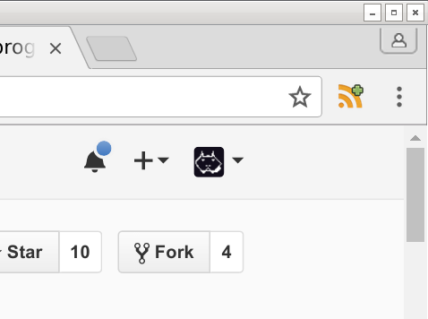Now you have online repository for lever where you can push your changes when you are done.
Next you should clone your online repository to your computer. Easiest way is to do 'Git Bash Here' then type "git clone " and paste the URL of your repository after.
 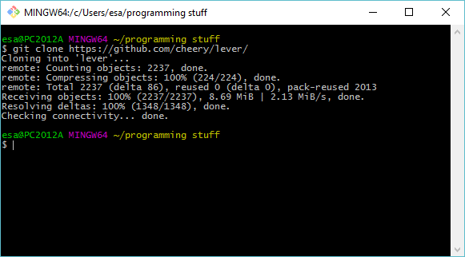
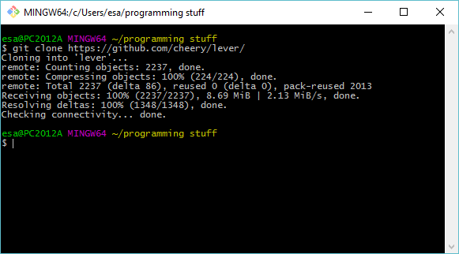
The git clone created a lever repository to where you issued it. Next you should 'File' -> 'Open Folder' to get it into your editor:
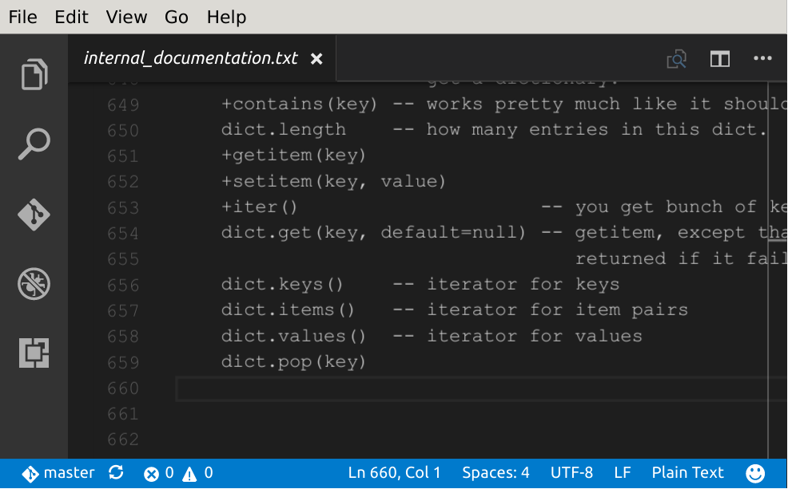There are various things one could do to Lever. So at this point this guide has been divided into many parts. But there is one important thing to discuss before we go ahead.
If you have been following this guide this far. You shouldn't stop.
I have programmed Lever myself. I have been programming for nearly 20 years. I know fears of different kinds can put people to stop what they wanted to do. If you don't have such fears, here are some to start with:
You may also stumble upon difficulties:
And sometimes the outcome is some of the following:
You may want to study these thoughts. They are common, they are meant to keep you on the safe side. Sometimes they prevent you from going ahead.
You can learn new things when you try. And things you try don't need to be in your profession to help you.
You have some motivation why you've read so far into this post. If it's easy to write it down, write it on post-it-note and glue to where you see it.
Also I could really use some non-programmers here. Some people who know very little and like to learn things and won't stop to the first obstacles they see would be really good help at writing documentation. Or if you handle some profession, oh it's interesting to hear what you think and what you write down.
There is real possibility that I reject commits. This shouldn't discourage you. If I ever reject a commit, I will explain why I rejected it and what can be done to get it through. I will try to be rational about this and minimize drama.
There is also a possibility that people ridicule you. But that really also happens even if you did nothing. Don't give a shit what people think of you. Don't let that to affect your mood or motivation. Don't get angered or agravated. This will require lots of training. You should do it.
Whatever you're going to do, try to do it well. Just don't fear to push just because it went bad.
There are some really easy places to contribute when you look around. Lever is straight out missing functionality at places. For example, we are supposed to support most methods for base types that are in Python. But there are lots of omissions.
For example, there was dict.update() missing some while ago.
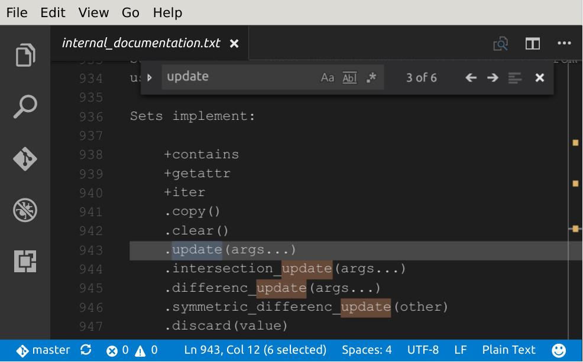Now there are some interesting things to note before you get to implement a missing functionality you find.
Some things in Lever are done slightly different ways. For example. The very first person who contributed to Lever wrote a 'len()' function. Lever uses '.length' -convention from Javascript. While he was working he noticed that we got '.length'. And implemented the 'len()' in terms of '.length'. Well I took his commit in. Though I should have really rejected it. I've kept it in the runtime as an easter egg. :-)
Your best bet here is to do some analysis. Is there a Lever way to do the thing this function did? Is there a purpose for this function? In this case '.update' is redundant. It is a good idea to write down your thoughts when analyse, that increases the chances that you succeed.
dict.update() puts the values into the dictionary. The implementation in Lever would be possible:
update = (self, other):
if isinstance(other, dict):
for key in other
self[key] = other[key]
else
for item in other
self[item[0]] = item[1]
dict.update() is part of the list comprehension elements in Python. Lever also appreciates list comprehensions as they are very expressive constructs.
There is a set.update() of similar behavior.
So the function is redundant, but every other reason points out it should be in Lever. Therefore implementing it will drive Lever forward.
I expect that people will contribute from need to extend lever while using it. Some explanation and analysis for the feature are even then very welcome.
It can happen that your analysis reveals that you don't need to extend Lever. If at the beginning you believed you did, it's likely that someone else thoughts same. It will be valuable to commit a report of your analysis as a .txt file, into analysis/ -directory of Lever.
If you edit lib/ it usually can be tested out with lever runtime.
When changing the runtime or compiler of Lever, you should get yourself the tools to compile a new runtime.
Go to Python download page
Next thing is important as RPython cannot translate to 64-bit executables on Windows, and it depends on bit-width of the Python. You need to download the "Windows x86 installer" from the download page that is for 32-bit environment. Also be sure that it is the Python 2.7 installer. The version number should appear in the start of the install.
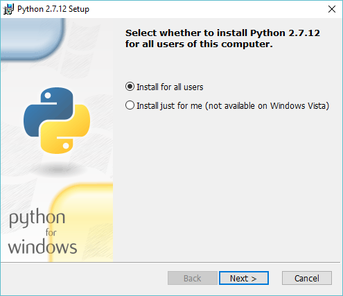It's okay to install the Python into C:\Python27 because it's usually expected to be there.
It's good idea to configure python to add itself into the PATH. Although it may be you have to restart your computer to have the PATH rule go to effect.
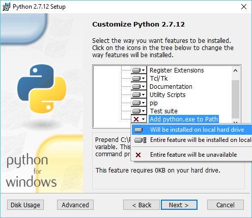Next you need to download & install Microsoft Visual C++ Compiler for Python 2.7 The Microsoft tends to mess up their URLs from time to time. If the link doesn't work, do a search to find this installer. Just make sure it comes from Microsoft owned -url. Install it just like usual.
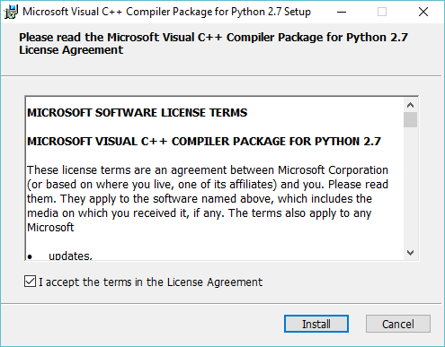Now you should be able to open a command line for this compiler from the start menu of your Windows.
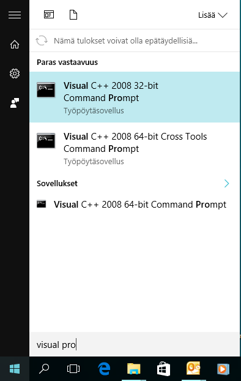The prerequisite for implementing a function into Lever is that you know how to write Python code. Also you may want to read the RPython manual to know what kind of limitations the Lever runtime requires.
Come up with a sample program into samples/ -directory first. It can be simple and descriptive.
The internal documentation points out the rest of dictionary methods can be found from the runtime/space/dictionary.py
Write your implementation for Dict_update.
Here's a mini-guide for test your program after compiling. Press F5 and select 'Lever Runtime'
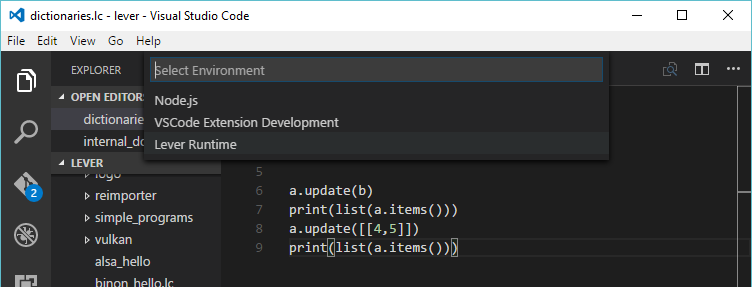Put "${file}" into the "program" -option, so that the currently shown file gets run instead of the 'main.lc'. You may also like to change the "lever_path" into "${workspaceRoot}", because we are developing Lever.
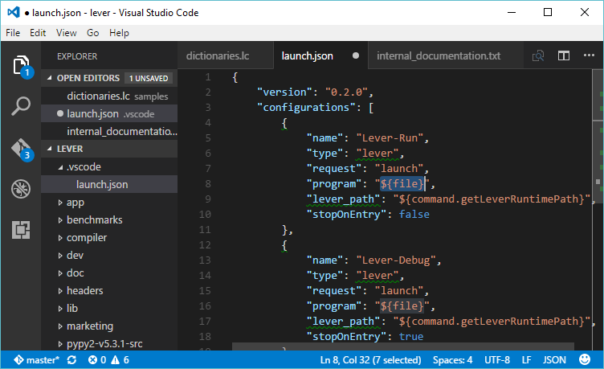You should get this kind of ENOENT -error when you try to run your 'dictionaries.lc'. This happens because your runtime doesn't have lever executable yet.

If you change the "lever_path" back to proper runtime, you should get the following error. It is clear that .update isn't there. If you do this, switch the lever's path back to this project, because you are going to compile a new runtime next.
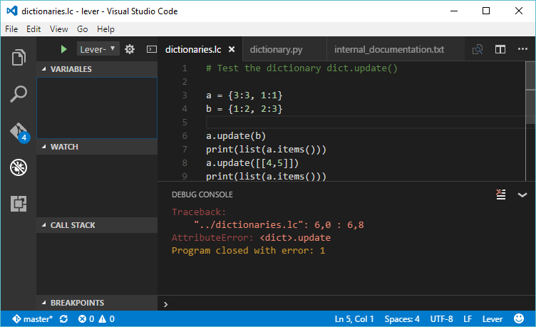There has been situation that my anti-virus software interferes with the debugger. If that happens then the debug console doesn't open. Restarting the Visual Studio Code seem to have helped when that happens.
To verify your implementation works, you need to translate the Lever runtime.
To do it, you will do that from the command line tool obtained two sections back. With the "Visual C++ 2008 32-bit Command Prompt". Navigate to your lever directory with a 'cd' -command. 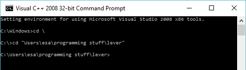
In the Lever 0.8.0 there is one complication due to RPython bug. This bug has been reported and fixed days ago, and it will not be present in the next PyPy and next Lever release.
Run the "python setup.py" -command, if it says 'is not recognized', check a troubleshoot for this few images below.
For now you need to rewrite the following two lines in pypy2-v5.3.1-src/rpython/rlib/rposix.py
 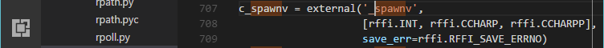
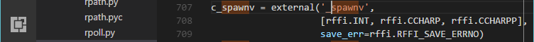
Remember to save these changes before a running the next command:
Write: 'python setup.py compile'
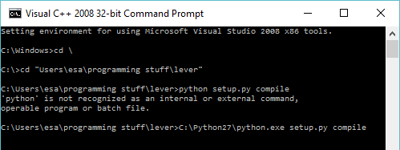This triggers a full compile to your runtime and gives you a lever executable you can use to develop lib/ -features. If you're only working on the lib/, it is also useful to know the 'compile-lib' and 'compile-lib-all' commands. These commands use the bootstrapping compiler to compile everything in the lib/ -directory. The later command forces recompile for all files in the lib/.
There is also 'compile-nojit' command to provide shorter compile time. But the resulting interpreter won't be able to JIT the code.
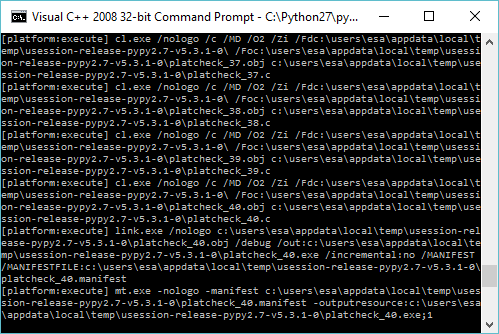And if it runs successfully, it should look about like this.
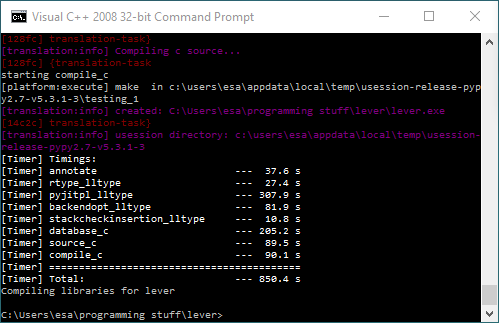Now verify that your lever path refers to this runtime. You're about done with the implementation once your sample program runs properly.
If you need the change immediately, there's the win32_dist.py -script that can create a new package with Lever.
If you implemented a feature, remember to update the internal_documentation.txt to let people know that there's a feature for that now. This is all what feature implementation requires.
Lever follows documentation-flows-upwards convention. In this convention the libraries and programs get a detailed description. Every file gets a description about why it is there, what led to its creation, what it implements and so on. These are collected into categories.
Reference documentation for functions will be written into doc/ and it will get a machine-readable format to allow it to be supplied into runtime from there. For now we have no reference documentation.
If you need to add images to the documentation. You can add them as usual. The preferred format is PNG and it's nice, but optional to use optipng on them before committing.
Guides are directly written into html files at guides/ -directory. Creation of a new guide requires a similar analysis as what code did.
There's possible that something goes wrong. For example the error below comes if you didn't patch the rpython. It's a well-known problem and the solution is documented on this page, so only request troubleshooting if you get a new twist to it.
This part of a guide will shorten considerably the time for you to get help with Lever. When you stumble upon an issue. Capture the logs and copy them. In the console you can do this by right clicking the window and pressing 'select all'.
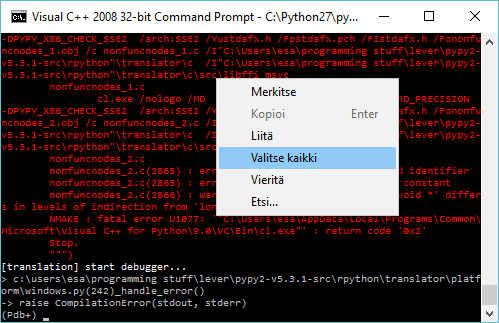The screen gets coloured white. In this mode press 'enter'. The screen recovers to what it was.
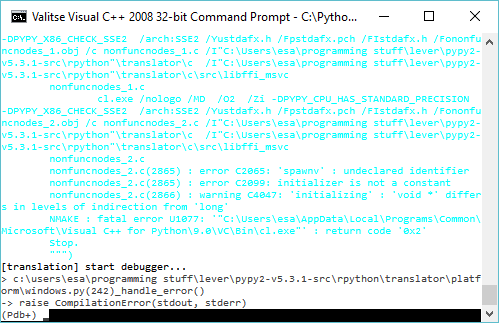Go into gist.github.com and paste your error log there. Press 'create public gist'. You must be logged into github to do this. Any other pastebin site works as well.
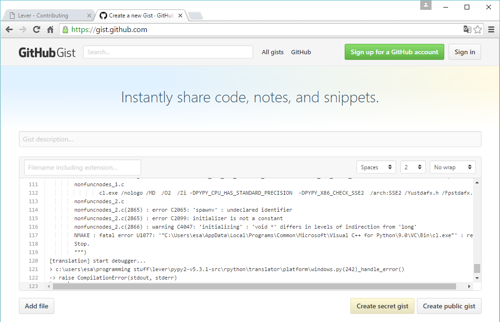On our issues page, press 'new issue' button. Describe the problem you encountered. Add a link to the paste you created. Explain what changes you've done and how you've diverted from the instructions of the guide. You can use the 'snip' -tool on windows 10 to provide us screenshots.
Details are fun. They provide us something we can react upon and provide the knowledge we need to troubleshoot.
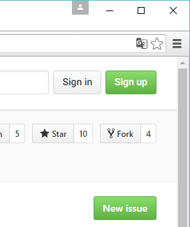This will let us know that you have a problem, and we will get to help you out asap.
You can do several commits, but please don't commit all the time. At worst, commit files once in a day after a productive session.
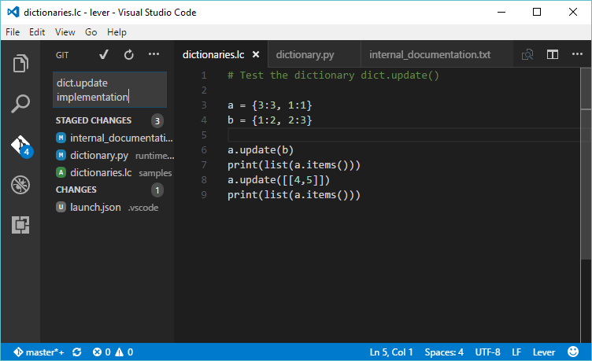Push the files using your preferred way to you server.
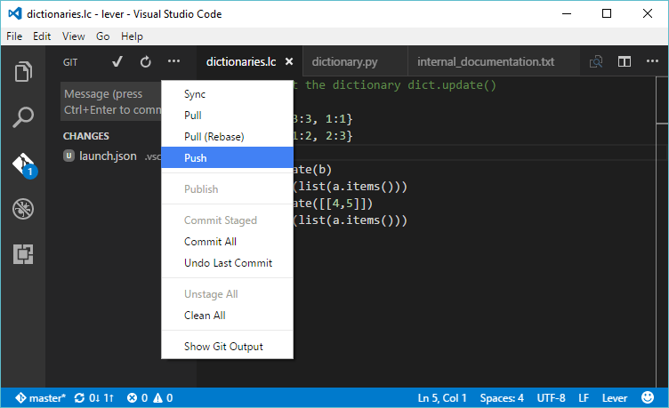When you think your work can be contributed, you can then finally write a pull request. There should be a 'new pull request' -button on the Lever repository. Go push that and step through.
Next you get to wait for my response.
If you've worked this through, you should be ready to contribute on Lever development. Chances are you are ready to contribute to most other RPython -related open source projects, including PyPy itself.
To have no trouble with them, please follow the respective conventions they have with their projects. For example. The documentation cycle Lever follows is unique to Lever and Lever-related projects. The compiling tools Lever uses are unique to RPython related projects, but only Lever has setup.py -script wired like this.
You will discover which conventions each project follows by reading their documentation.